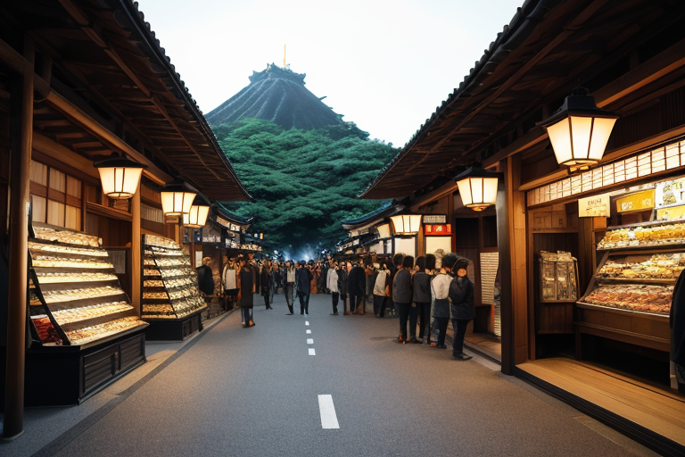
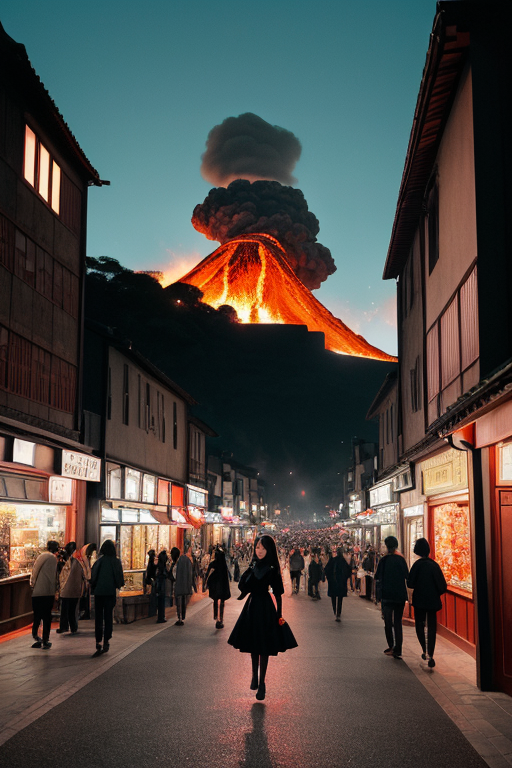
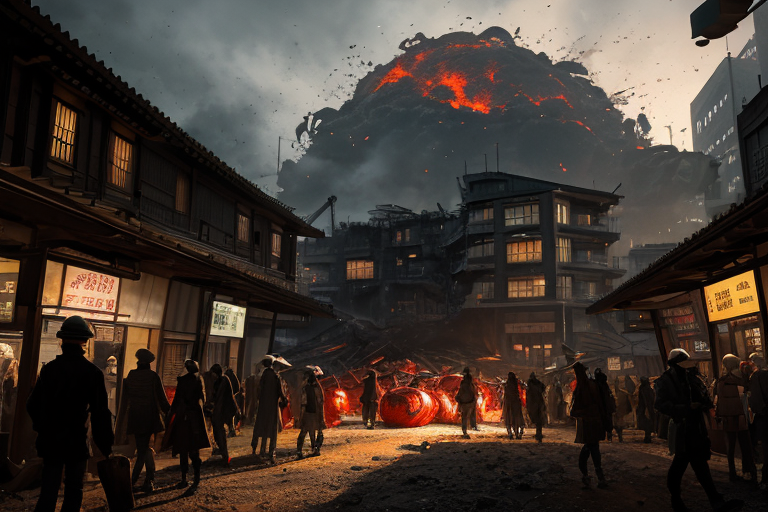
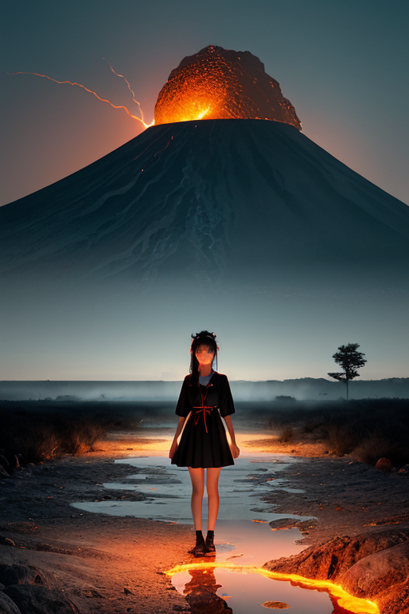
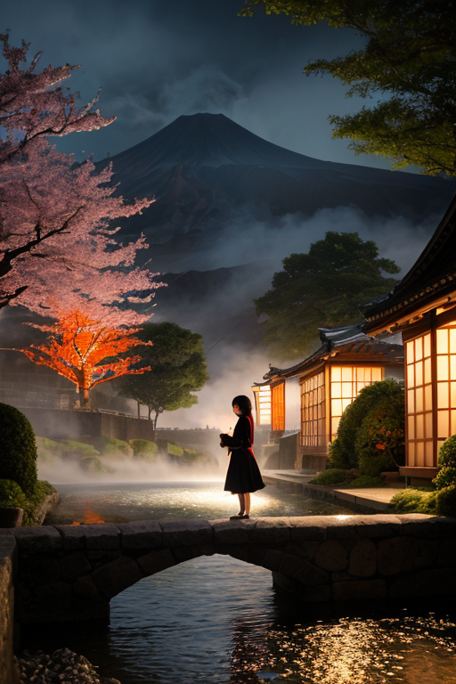

第一章 現実の熊本
あなたはまだ気づいていない。この土地にも、王がいることを。
熊本城の石垣を背に、上通りのアーケードは活気に満ちていた。観光客の笑い声、くまモンのぬいぐるみを抱える子供、馬刺しを求める列。金の流れは、この町の血管を脈打たせている。水前寺成趣園の静寂とは対照的な、欲望と活気のざわめき。そのざわめきの奥底で、土地は微かに軋んでいた。2016年のあの日から、この町の基盤には目に見えない亀裂が走り続けている。観光収入という繁栄の下で、それは静かに進行する歪みだった。
人々は知らない。繁華街の雑踏の中、一人の男が佇んでいることを。その目は、往来する人々の足元、舗装の下、深く眠る岩盤を見据えていた。彼の名はクマモトリア・ヴァルカン。激情は内に秘め、理性の冷たさで歪みを計測する。彼の傍らには、熱気を帯びた小さな影、ヴァルニアが寄り添う。人々の熱気とは別種の、地の底から湧き上がる熱を、彼女はかすかに感知していた。
「立て直した」という誇りの裏側で、土地は問いかけ続ける。崩れても、また立てるか？と。王は答えを知っている。彼の役目は、立て直すことではない。崩れるその一瞬を、ほんの少しだけ和らげ、次の一歩を踏み出すための「間」を調整することだ。

第二章 歪みの兆候
熊本城の石垣を、観光客の群れが埋め尽くしていた。スマートフォンのフラッシュがきらめき、笑い声が石に跳ね返る。復興のシンボルは、確かに人を呼び、金を呼んでいた。城下の商店街は太平燕やからし蓮根の看板で溢れ、くまモンのぬいぐるみが店先を飾る。活気は本物だった。
しかし、ヴァルニアの頬を、微かな熱風が掠めた。彼女は目を閉じ、人々の足音、金銭のやり取りのざわめき、車の流れの振動を聴いた。その雑音の底に、別のリズムが混じっている。地盤が呻く、かすかな不協和音。阿蘇の遥か地下で、岩が微かに軋むその音は、経済活動の熱気に完全に掻き消されはしない。
王は、繁華街のビルの屋上に立っていた。眼下に広がる商都の光景を、感情を持たぬ目で見下ろす。彼の役目は、崩壊を防ぐことではない。歪みが蓄積するその速度を、ほんの少し遅らせることだ。人々が「明日」を当然のように計画できる、その前提となる「今日」の安定を、微調整で支えることだ。
ヴァルニアが駆け寄り、無言で彼の袖を引いた。歪みの兆候は、もう「調整」の領域に達していた。

第三章 王の葛藤
歪みは、人の欲望の流れに沿って増幅していた。新たな商業施設の建設ラッシュ。地盤への負荷は計算外のものだった。クマモトリアは、その計画書の山を、感情を持たぬはずの目で「見て」いた。守るべき城と、育むべき商い。両立を求める人間の欲望そのものが、新たな歪みを生んでいた。
「止めるか」ヴァルニアが問うた。その声には、彼女自身の情熱と同質の焦りがあった。
「否」王は答えた。彼の役目は否定ではない。調整だ。建設の振動を、周辺の古い街区へ伝播しないよう分散させる。重機の動作一つひとつに、微細な遅延を織り込む。崩壊を防ぐのではなく、崩れる速度を計算し、その間に人間が気づき、対策を講じる余地を創出する。それが「立てる」可能性の種だ。
彼は赤黒い紋章を煌めかせ、地下に脈打つ圧力を、少しだけ別の方向へ逃がした。地面はかすかに唸ったが、誰も気付かない範囲で収まった。守護とは、時に、守られる側の暴走を許容することでもある。その矛盾に、彼の内なる「闘志」が、初めて苦い味を覚えた。

第四章 妖精との対話
水前寺成趣園の池面に、阿蘇の伏流水は静かに満ちていた。その畔で、ヴァルニアは熱い湯気のような息を吐いた。
「商いとは流れですよ、王。金の、物の、人の。この町は、その全てが火山の裾野に集まり、また散っていく」
彼女の目は、園の外を流れる路面電車や、活気ある商店街を見据えていた。
「加藤清正公だって、城を石垣で固めると同時に、町割りを通して富の流れを設計した。守るものと、流通させるもの。その両輪が、この地の強さであり、脆さでもある」
王は黙って聞く。彼女の言葉は、単なる報告を超えていた。
「2016年のあの日、流れは一瞬で止まりました。でもね、すぐに別の流れが生まれた。支援の、人の、そして再建への意志の。崩れた石垣の一つひとつに番号を振り、元の位置に戻す作業は、まるで巨大な商いのようだった。失ったものと、これから取り戻すものとの、静かで執拗な取引」
ヴァルニアは王を見た。
「立て直すとは、元通りに積み上げることじゃない。流れを止めず、新たな経路を見出すことです。あなたが地下の圧力を分散させるように、私たちは、この地上の『熱量』を、崩壊ではなく創造の方へ、ほんの少し導いている」
園の池の水は、絶え間なく入れ替わりながら、常に満ちていた。

第五章 微調整と余韻
熊本城の石垣を積み直す音は、町の日常に溶け込んでいた。観光客の足音、商店街の賑わい、工事現場のエンジン音。その雑多な流れの中、王は立っていた。彼の仕事は、巨大な岩を動かすことではない。人が躓く石をほんの少しずらし、自転車のハンドルが曲がる角度を微修正し、ふと視線が上がる「偶然」を仕込むことだ。崩れたものは、元の形では戻らない。だが、流れは変えられる。
水前寺成趣園で、老夫婦がベンチに腰を下ろした。彼らの背後で、桜の一枝が、風のないのに微かに揺れた。それは妖精が、老いた背中に差し込む午後の日差しを、ほんの一瞬、遮ったからだ。誰も気づかない。通潤橋の水路を覗き込む子供の、足を滑らせそうになった一歩を、見えない手が支える。黒川温泉の湯煙が、ため息混じりの会話を優しく包む。すべては目立たない調整の連続だった。
崩れても立てるか？ 答えは、城の再建工事にも、町を行き交う人々の表情にもあった。完全な修復はない。しかし、流れを絶やさず、新たな経路を見出してゆく営みそのものが、立て直しなのだ。王は感情を覚え、その闘志は、静かな持続力へと変わっていた。
あなたの町にも、王がいる。